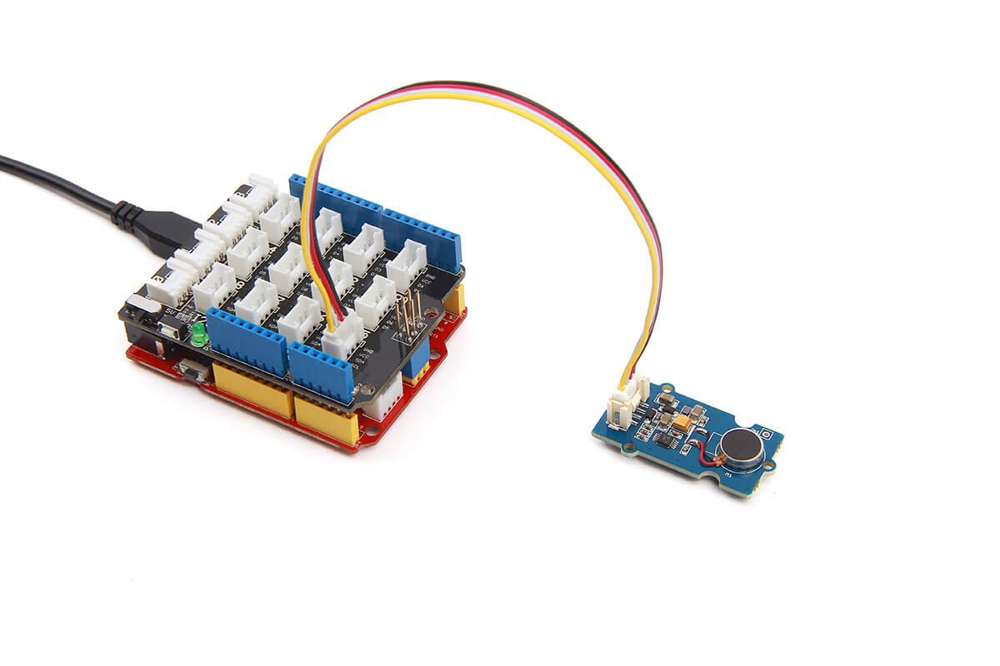
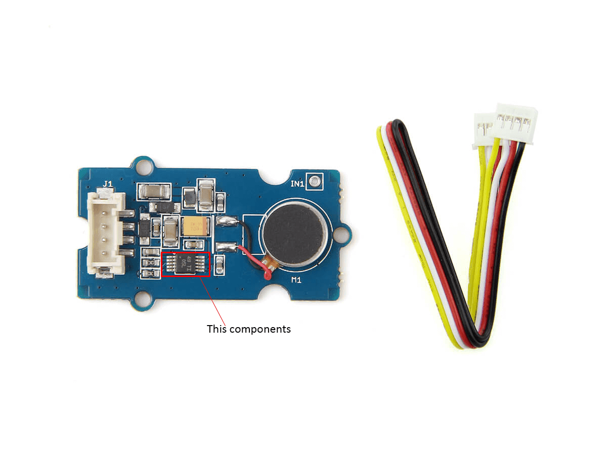

Grove - Haptic motor is a grove module integrated with DRV2605L which will give your project more feelings. This motor is specially designed for various effects, such as ramping the vibration level up and down, for wearables and other IoT devices. Right now we have developed an easy-to-use library which simulate 123 kinds in total of vibrating modes and this will make your prototyping quicker. Also, you can develop more advanced functions with driver DRV2605L which will improve actuator performance in terms of acceleration consistency, start time, and break time and is accessible through a shared I2C compatible bus or PWM input signal.

| Operating voltage | 3.3~5.0 V |
| Ripples (at maximum power) | 50~100 mV |
| Max power | 750 mW |
| I2C speed | 100 kHz |
| Vibration effects | 123 types |
| Driver | DRV2605L |
| Port | I2C |
| Default I2C Address | 0x5A |
Front view
Back view
Note that this section only shows you how to build a basic development environment. You can build a development environment for your project with following guides:
Refer to following guides to building an appropriate IDE:
Note that Arduino board will also be fine if you happen to have no Seeeduino board because Seeeduino is compatible with Arduino.
Note that make sure you have built a development environment successful through previous steps.
Note that make sure your board has selected Arduino Uno and COM port right chosen. Connect to I2C interface on Seeeduino board and Haptic motor with grove wire.

Note that in this case we use Seeeduino 4.2 as experiment board which is a compatible board with Arduino.
Tip: You can use Base shield v2 as expansion board which will make your connection of modules simple.
Note that never touch driver DRV2605L which may cause damage to it while it get power connected.
